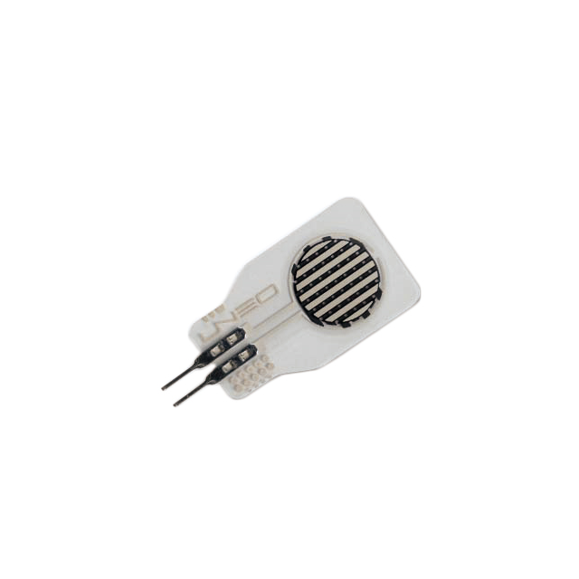
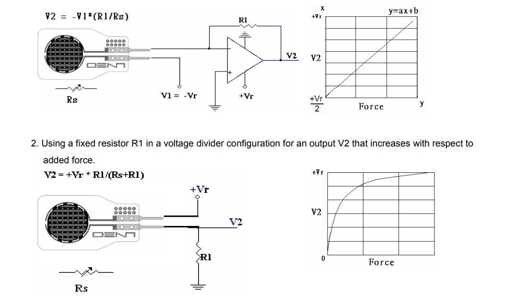
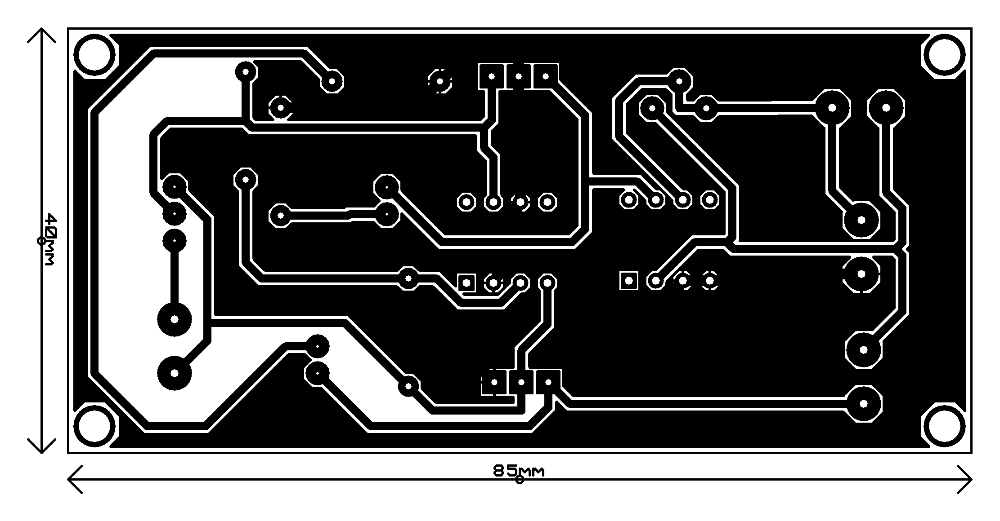

Load Signal Conditioner
"Designing a precision load signal conditioner to accurately measure forces up to 500N, with adjustable sensitivity for enhanced linearity and reliability."

Project information
- Category: Electronics, PCB Design
- Purpose: Interface module for GHF10-500N load cell
- Project date: 11/09/2024
- Project Team: Ahmed Amin
- Project Video: N/A
Overview
The Load Signal Conditioner is specifically designed to interface with the GHF10-500N load cell sensor. This sensor, utilizing a piezoresistive polymer composite, operates within a 0–500 N range, providing a variable conductance proportional to the applied force. The main challenge in conditioning this signal arises from the non-linearity of the voltage divider configuration often used for resistive sensors, necessitating a specialized approach to ensure consistent force measurement across the entire range.
Principle of Operation
The GHF10-500N sensor functions based on changes in resistance relative to the applied force. Due to its dielectric material, the resistance decreases as force increases, affecting the sensor’s sensitivity. This load signal conditioner uses a high-resolution variable resistor to fine-tune the sensor's response, ensuring accurate measurements across the force range. The formula derived for force measurement considers the inverse proportionality of sensor resistance (\( R_s \)) to the force applied (\( F \)) , maintaining direct control over sensitivity adjustments.
Circuit Design Overview
The Load Signal Conditioner circuit is designed to accurately capture and condition the signal from the GHF10-500N load cell sensor. The circuit comprises several crucial components to achieve stable operation and precise force measurements. Below is a breakdown of each part, including the power drive circuit concept.

1. Operational Amplifiers
Operational Amplifiers (LM741) The circuit uses LM741 operational amplifiers for signal amplification. These op-amps are configured to scale the sensor's output voltage, providing a linear response that aligns with the applied force. The amplification level is adjustable via a variable resistor, enabling fine-tuning of sensitivity across the entire measurement range.
2. Voltage Regulation and Power Drive Circuit
The power drive circuit is essential for delivering consistent, stable power to the load cell and amplifier stages. It includes:
Voltage Regulators (7805 and 7905) : The 7805 and 7905 regulators supply stable +5V and -5V outputs, respectively. This dual supply configuration supports both positive and negative voltage requirements for the op-amps, ensuring proper signal amplification.
Operational Amplifier Power Configuration : An additional op-amp is used within the power drive circuit to generate both positive and negative voltage from the main 15V supply. This design helps regulate voltage fluctuations, maintaining stable operation under varying loads.
Input Protection : The circuit includes a voltage regulator at the input, with the main supply voltage set at 15V, though it can accommodate up to 32V. This input protection safeguards the entire circuit from overvoltage, preserving the integrity of sensitive components.
3. Variable Resistor (Rheostat) for Sensitivity Adjustment
A high-resolution variable resistor, or rheostat, is integrated into the circuit to allow fine adjustments to the sensor's sensitivity. This component is critical for maintaining linearity in the force measurement range, counteracting any non-linear response in the voltage divider configuration. Adjusting the rheostat ensures the output voltage (\( V_o \)) or (\( V_2 \)) remains proportional to the applied force, allowing accurate calibration.
4. Complete Schematic
The schematic layout includes:

Load Cell Interface : A direct connection to the GHF10-500N sensor, which translates the applied force into a change in resistance.
Amplification and Filtering Stages : Amplification provided by the LM741 op-amps, with filtering elements to reduce noise and stabilize the output signal.
Power Drive Circuit : Incorporates the voltage regulators and operational amplifier to ensure the circuit receives stable power, with protections for consistent and safe operation.
PCB Layout Overview

The PCB layout and schematic for the Load Signal Conditioner are expertly crafted to deliver stable, accurate signal conditioning for load cell measurements. The circuit is powered by a regulated 15V input with dual +5V and -5V outputs from 7805 and 7905 voltage regulators, providing balanced power to the operational amplifiers and enhancing signal stability. Power status is indicated by two LEDs, simplifying diagnostics.
Central to the design are two LM741 operational amplifiers: one creates a stable reference voltage, while the other amplifies the load cell signal, with a high-precision variable resistor (RV1) allowing fine sensitivity adjustments. This setup ensures accurate, linear response across the load range.
The layout includes connectors for easy integration and multiple test points for straightforward calibration and troubleshooting. Thoughtful trace design minimizes noise, while central component placement shortens signal paths for optimal performance. Mounting holes provide secure installation, making this design robust and precise, ideal for reliable force measurements.
Calibration Process for Load Signal Conditioner
To ensure precise force measurements, the Load Signal Conditioner requires a carefully calibrated constant (\( k \)). This calibration process involves taking measurements of the variable resistor (\( R_v1 \)), the force applied (\( F \)), and the output voltage (\( V_o \)) or (\( V_2 \)) The steps below outline the full calibration methodology, including the experimental approach used to achieve a reliable (\( k \)) value.
Initial Setup and Preparation
Power Supply : Connect a stable 15V DC power supply to the load signal conditioner. Verify that both the +5V and -5V outputs from the voltage regulators (7805 and 7905) are stable, as any fluctuation here could affect sensor readings.
Sensor Placement : Attach the GHF10-500N load cell sensor securely to the test setup, ensuring that force application is perpendicular to the sensor’s surface for uniform measurements.
Measurement Tools: Use a high-precision digital multimeter to measure output voltage (\( V_o \)) and variable resistance (\( R_v1 \)). A calibrated force gauge or weight set should be used to apply known force values (\( F \)).
Variable Resistor (\( R_v1 \)) Measurement
The rheostat (\( R_v1 \)) is is adjusted to achieve sensitivity alignment across the full force range (0–500 N). The value of (\( R_v1 \)) affects the sensor’s response and is measured as follows:
1. Power off the circuit to measure (\( R_v1 \)) directly with a multimeter from R1 Measure pins in the PCB.
2. Adjust (\( R_v1 \)) to a starting resistance value (e.g., 10 kΩ) and record it.
3. Repeat measurements of (\( R_v1 \)) after each adjustment during the force calibration steps below, noting how changes affect (\( V_o \)) and sensor sensitivity.
Step-by-Step Calibration Procedure to Determine (\( k \)) value
The calibration constant (\( k \)) is derived through experimental data by following these steps:
1. Apply Known Forces: Incrementally apply a series of known forces (\( F \)) to the load cell, starting from a minimal load (e.g., 10 N) and progressing up to the maximum rated force of 500 N.
2. Measure Output Voltage (\( V_o \)): For each applied force, record the output voltage across the op-amp. This voltage should vary in proportion to the applied force, allowing us to relate (\( F \)) and (\( V_o \))
3. Adjust (\( R_v1 \)) for Sensitivity: After each force measurement, fine-tune (\( R_v1 \)) to ensure linearity in the force vs. voltage relationship. Record the new value of (\( R_v1 \)) after each adjustment, noting how it affects (\( V_o \))
4. Derivation of Calibration Constant (\( k \)): Using the collected data (force, output voltage, adjusted variable resistance) we derive k using data Fitting and Hypothetical Data Table.
Force equation:
\[ F = \frac{V_o \cdot k}{V_r \cdot R_{v1}} \] Once the average 𝑘 has been established, perform verification by reapplying known forces and calculating 𝐹 using the determined 𝑘 value.Applications and 3D view
Through the Load Signal Conditioner project, we have deepened our understanding of circuit design, signal conditioning, and sensor integration. This project provided hands-on experience in applying operational amplifiers for signal amplification and voltage regulation, essential skills for creating stable, accurate measurement systems. We tackled challenges related to non-linear responses in voltage divider circuits and learned to optimize sensor sensitivity using variable resistance adjustments, ensuring accurate readings across a range of applied forces. Additionally, our work on the power drive circuit emphasized the importance of stable voltage supply for sensor reliability, a fundamental concept in advanced electronics.